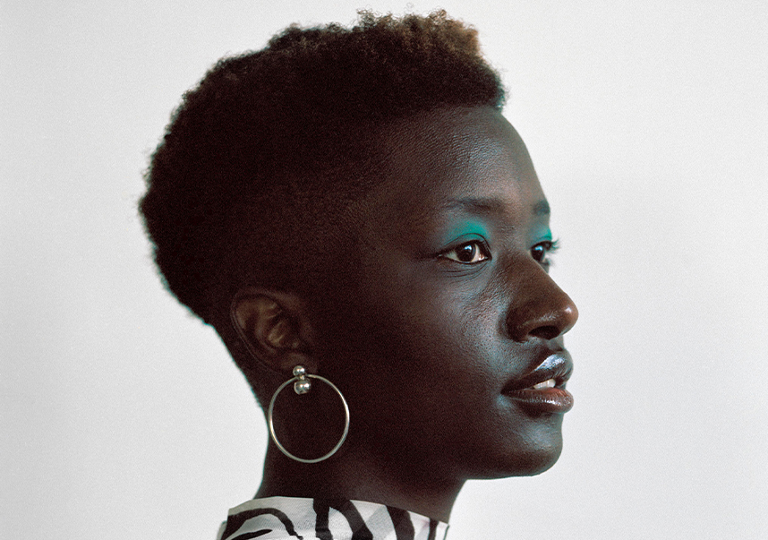
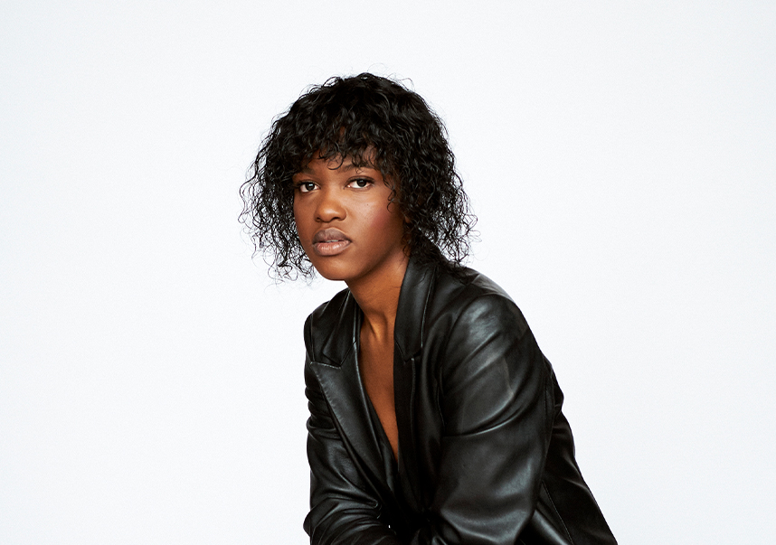
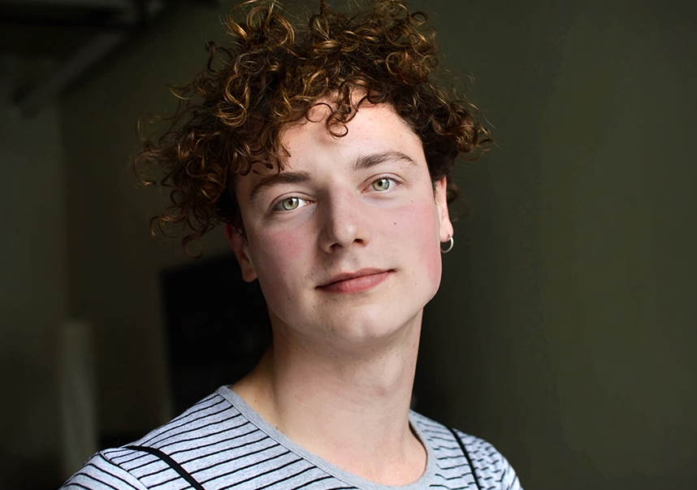
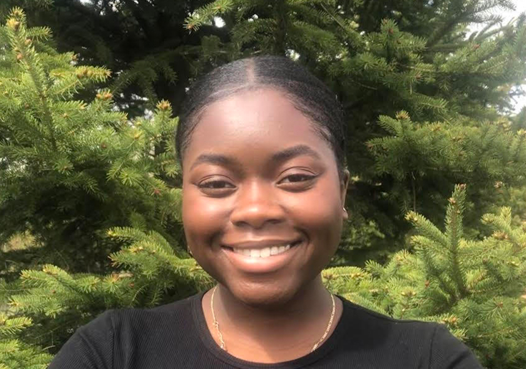
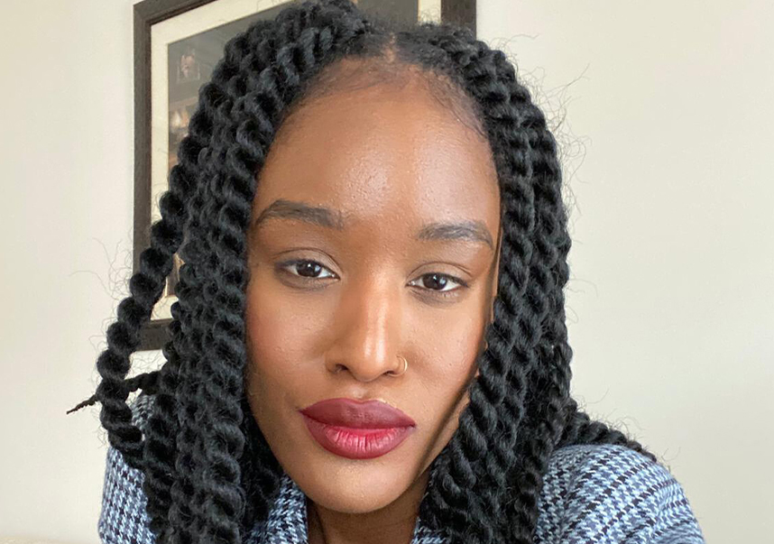
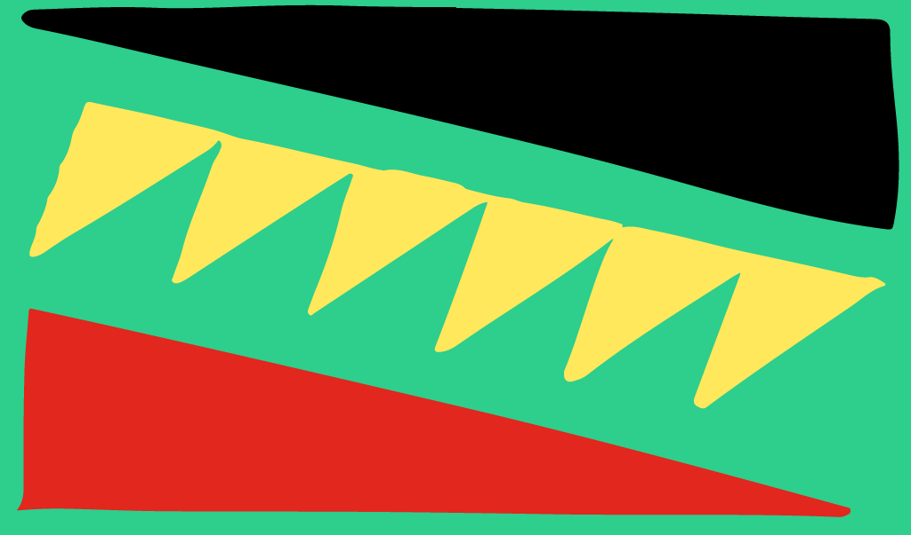
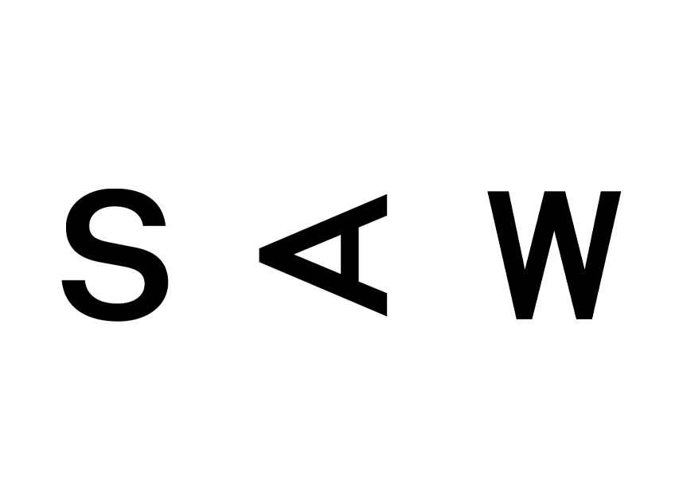

Team
Shaya Ishaq Creative Director
Shaya Ishaq is an interdisciplinary artist, designer, and writer currently based in Ottawa. In her practice, she delves into themes related to contemporary craft discourse, design anthropology, (afro)futurism and diaspora. As a first-generation Kenyan-Ugandan connected to a lineage of weavers, she is devoted to the materiality and the creolization of form.
Shaya is often called to textiles and clay as a starting point to create wearable art, jewelry adornments, and installations that incite participatory engagement. Through the meditative processes of weaving, felting, and handmade ceramics, she explores the nuances of her positionality and the liminality of rites of passage which often leads to sculptural textile and ceramic works. Her curiosity about the poetics and politics of space informs her interests in creating immersive environments that embrace the emergent possibilities of spatial design. This allows her to explore how we relate and hold space for each other in space across differences.
Shaya has studied at Concordia University with a focus on Fibres & Material Practices, NSCAD University as well as Haystack Mountain School of Crafts in Deer Isle, Maine. Shaya has been a research fellow of the Textiles and Materiality Research Cluster as part of the Milieux Institute for Arts, Culture, and Technology.

Isabelle Ofume Project Manager
Isabelle Ofume is a Nigerian-born, North-American raised agency owner and brand champion. She handles the Branding, PR, Marketing and Social Media, Outreach, Brand Creative Strategist for many creative projects across music, events, arts and more. Isabelle has been a pivotal member in shaping brands such as Khyber Centre for the Arts, Black Girl Magik, Manifesto TO, Undisposable, Nocturne: Art at Night, and many more.
She draws inspiration and purpose from challenging the status quo, and by shining an empowering light on the unique, the emotive, the authentic to facilitate awareness and respect among a far broader audience. In her teen years, she turned to the emerging music and fashion blogosphere and social media to create opportunities for herself. Helping champion artists like Lupe Fiasco, Erick ARC Elliott and contributing think-pieces to pop culture magazines, WWD and PBS.

Lucas LaRochelle Web Designer + Developer
Lucas LaRochelle is a designer and researcher whose work is concerned with queer and trans digital cultures, community-based archiving, and co-creative media. They are the founder of Queering The Map, a community generated counter-mapping project for digitally archiving LGBTQ2IA+ experience in relation to physical space.

Anu Makinde Project Assistant
Anu’s work with the Library of Infinities aligns with her passion for understanding diaspora using cultural outputs and their interaction within the geopolitical borders that attempt to define them. These interests have also been realized through her work in music journalism, housing advocacy and event production. Growing up, stories captured her imagination and today her love of books has brought to her incoming studies at the University of Toronto in a Master of Arts in Geography. Anu is also a lover of reality tv, playlists, and baking.

Ojo Agi Advisor
Ojo Agi (she/her) is an independent scholar based in Toronto, Canada. Her research-based and socially-engaged practice is dedicated to knowledge translation and mobilization via the arts. Consequently, her practice includes making art, writing, curating, programming, and teaching–all with the objective of creating space and directing resources to support cultural diversity.
Ojo completed her MA in Women and Gender Studies from the University of Toronto and is currently working towards a PhD in Art History from Concordia University. Her research contributes Black feminist perspectives to contemporary art and cultural discourse, with a focus on spatial politics, postcolonial subjectivities, and storytelling through drawing and painting. Her artwork has been exhibited with Campbell River Art Gallery (British Columbia) and Milieux Institute (Quebec); she has curated with Feminist Art Collective and Art Gallery of Ontario; and she is a member of the latter’s Global Africa and the Diaspora committee and an advisory board member for Library of Infinities.

Nasma Ahmed Advisor
Nasma Ahmed is a technologist and facilitator based in the Dish with One Spoon Territory. Nasma is currently the Director of the Digital Justice Lab, an initiative building towards a more just and equitable digital future. She has extensive experience working alongside public institutions and the non-profit sector, supporting technology capacity building projects. In 2017 she was an Open Web Fellow with Mozilla and Ford Foundation, during her time as a fellow she focused on building digital security capacities within nonprofits. She is passionate about all things baking, film, ceramics and imagining new worlds.

SAW Partner Organization
From its inception in 1973, the artist-run centre SAW has supported politically and socially engaged art, focusing on the performance and media arts. Many of the world’s best-known artists have exhibited at SAW in the early stages of their careers.Many of the world’s best-known artists have exhibited at SAW in the early stages of their careers. Begun by a group of local artists, the gallery was originally part of the legendary café Le Hibou on Sussex Drive, hence the name SAW, an acronym for Sussex Annex Works. In 1981, the centre founded the SAW Video cooperative to support independent video artists and documentarists. During this time, the centre also initiated Club SAW, which has become the most important multidisciplinary space in the region. In 1989, SAW Gallery, SAW Video and Club SAW moved into the historic Arts Court building. Since 2001, SAW Video, now called the Digital Arts Resource Centre, has operated as a distinct organization no longer legally affiliated with SAW, although both share a home at Arts Court and continue to collaborate on many projects. SAW aims to become a premier artist-run centre in Canada and the world, engaging in innovative programming, outreach and exchange initiatives. With over 30,000 visitors each year, SAW is a prime destination in the Ottawa-Gatineau region for contemporary art.